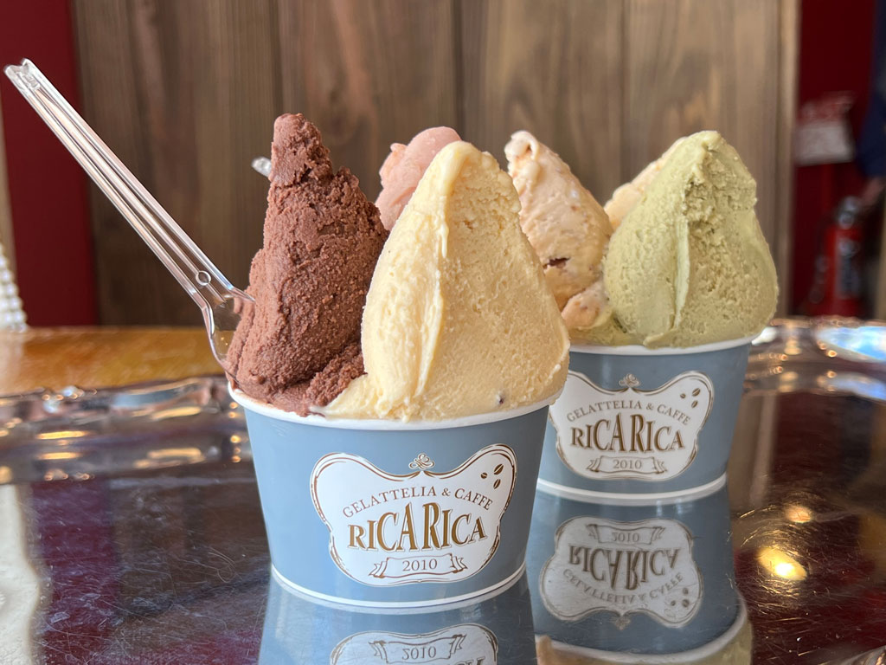

1. 百舌鳥八幡宮
仁徳天皇陵古墳をはじめとする百舌鳥古墳群の中に鎮座する歴史ある神社。毎年秋の月見祭で奉納される、絢爛豪華な「ふとん太鼓」は必見です。
2. とんかつ・洋食の店 ICHIBAN
三国ヶ丘駅近くの人気洋食店。昔ながらの味を受け継ぐサクサクのとんかつや、丁寧に作られたハンバーグなど、どこか懐かしい洋食メニューが揃っています。
3. 南宗寺
茶の湯の巨匠・千利休ゆかりの禅寺。国の名勝に指定されている枯山水の庭園は静寂に包まれ、心を落ち着かせてくれます。
4.菜食和合 茶倉
旬の野菜の力を最大限に引き出した、創造性あふれるヴィーガン料理が楽しめる予約制のレストラン。目にも美しい料理の数々が、心と体を満たしてくれます。
5. ジェラッテリア&カフェ リカリカ
旬のフルーツをふんだんに使ったものから濃厚な定番フレーバーまで、素材の味を活かしたこだわりの手作りジェラートが味わえる人気店。常時多くの種類が並び、訪れるたびに新しい味に出会えます。
